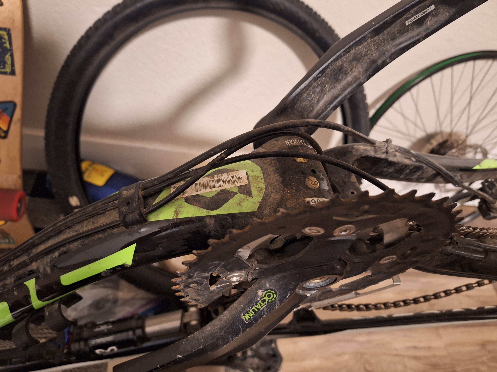
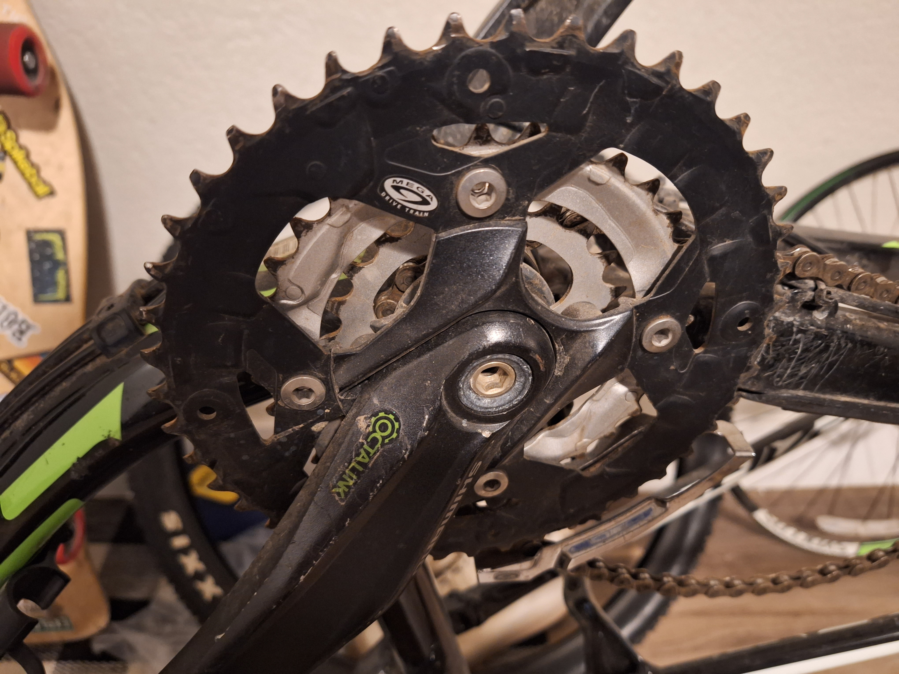
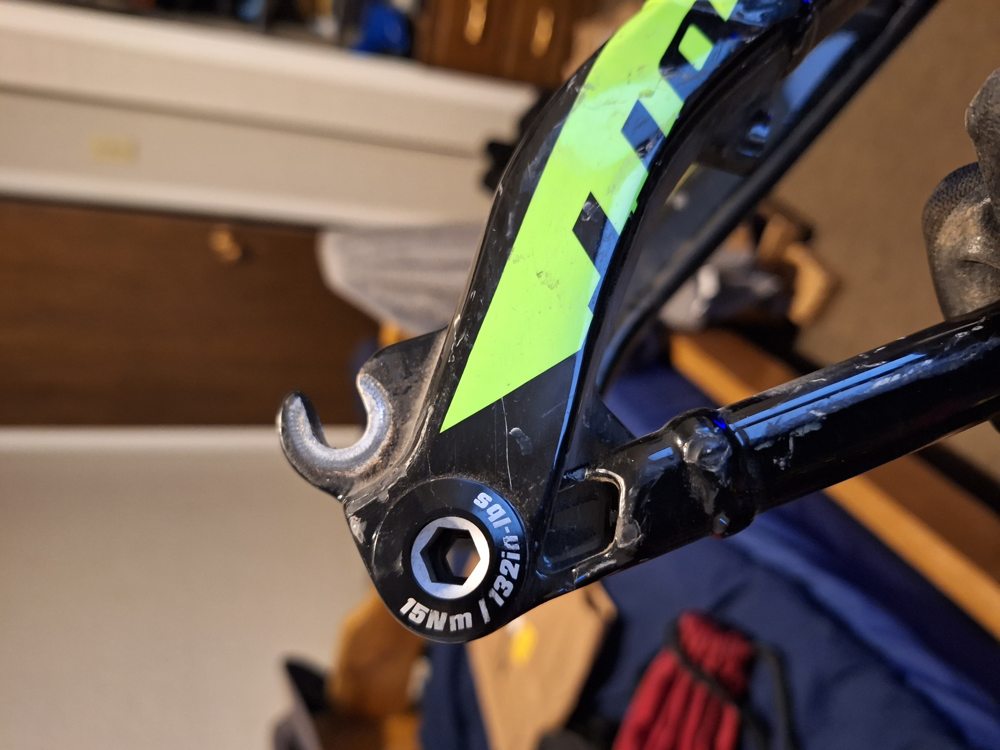
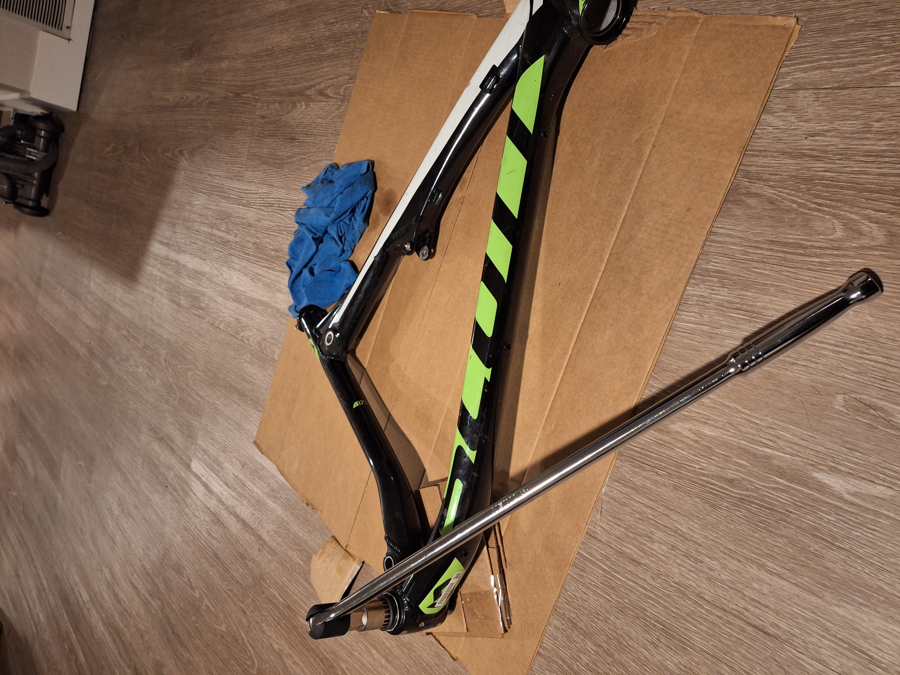

Rock Canyon Park
Unfortunately, this morning trip was with a borrowed bike, but I'm hoping to have my own bike for these trips.
My neighbor's bike
This is where the trouble started. One of the guys that lived below my old apartment was going to toss his bike up on FaceBook marketplace. He asked if I wanted it and I offered him $80 bucks. It came with a flat tire, torn seat, broken helmet, and used up tread. It was a fixer upper for sure
New Tires
I bought a new tire and some new tubes. Some research online and a call to the bikeshop that sold the bike sent me in the right direction to figure out what bike this is. Of course, all these months later, I don't remember what bike it is. It's some sort of cheap version of the Scott cross country bike.

Pedals, Crankshaft, Cog

Frame Hing
I started deconstructing the frame. I want to sand it down and do a custom paint job
Cog Removed

Bottom Bracket Removal
Removing the bottom bracket took some research and tools. I had to figure out the width and number of teeth on the bracket in order to get the right adaptor. The 3/8" breaker bar I had wasn't long enough to give the leverage I needed to loosen the bracket. I bought a 1/2" breaker bar and penetrating oil which, combined with my roommate standing on it, was able to pop the bracket loose.
